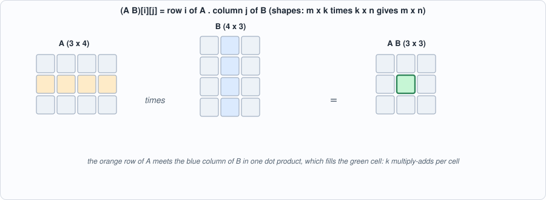
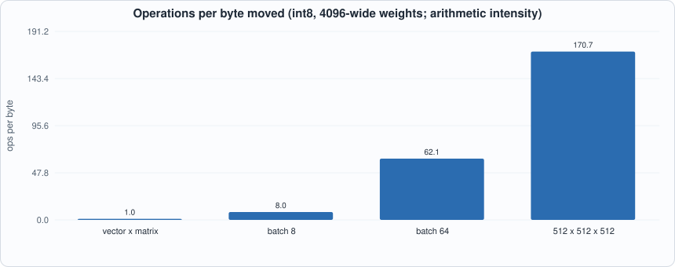

Appendix D. Linear Algebra for Machine Learning¶
About the animals in this picture and where they are standing
- Bezoar ibex (wild goat) (Capra aegagrus) lives from Turkey and the Caucasus through Iran to Pakistan. It is the wild ancestor of the domestic goat, which people began keeping some ten thousand years ago.
- Nubian ibex (Capra nubiana) lives in the rocky, arid hills of north-east Africa and the Arabian Peninsula, from the Sinai and Egypt south to Sudan and Ethiopia. Its coat matches the desert rock, and the males' ridged horns sweep back like a sickle.
- Iberian ibex (Capra pyrenaica) lives in the mountains of Spain and Portugal. Its Pyrenean subspecies, the bucardo, died out in 2000. In 2003 scientists cloned one; the kid lived only minutes, making it the first extinct animal to be cloned.
- Siberian ibex (Capra sibirica) lives in the high mountains of Central Asia, from the Altai and Tian Shan to the Himalaya. It is one of the largest ibexes, and the males' ridged horns can exceed a metre in length.
The scene is imaginary: it is set on Europa, the icy moon of Jupiter, which hides a salty ocean beneath its ice; Jupiter fills the sky. The animals are stylised drawings, shown where they could not live, for effect.
Who this is for: readers who need the mathematics behind Chapters 4, 8, 9 and 11, and have not met vectors and matrices as computations. The only operations a neural network performs on its weights are the ones on this page: dot products, matrix products, a few elementwise functions and softmax. Everything is checked by tools/appx_d.py, which uses nothing but Python lists.
Vectors and the dot product¶
A vector is a list of numbers. The dot product of two vectors of the same length multiplies them element by element and adds: a . b = sum(a_i * b_i). For a = [1, 2, 3] and b = [4, -5, 6] it is 4 - 10 + 18 = 12. Geometrically it measures how much two vectors point the same way: divided by the lengths it is the cosine of the angle between them (1 for the same direction, 0 for perpendicular, -1 for opposite). The attention score between a query and a key (Chapter 8) is a dot product: a large score means the query and key point alike.
The dot product is also the multiply-accumulate (MAC) of Chapter 2: every matrix operation is a pile of them.
Matrices and the matrix product¶
A matrix is a table of numbers with m rows and n columns. Multiplying a matrix A (m x k) by B (k x n) gives an m x n matrix whose entry (i, j) is the dot product of row i of A with column j of B. The inner dimensions must agree (k); the result has the outer ones. Matrix multiplication is not commutative: A B and B A usually differ, and may not even have the same shape (the script shows a 2x3 times 3x2 giving 2x2 and the reverse giving 3x3).

Figure D.1: one cell of a matrix product.A vector times a matrix (x W, a 1 x k row times a k x n matrix) is the case that matters most: it is what one layer of a network does to one token's activations. The transpose swaps rows and columns, and (A B)^T = B^T A^T (checked).
Three ways to see one product¶
The script computes the same product three ways and checks they agree: row by row (each row of the left matrix times the whole right matrix), entry by entry (a dot product per output cell), and as a sum of outer products (column k of A times row k of B, added over k). The last is the view that matters for hardware: a systolic array (Chapter 4) receives one column of the left operand and one row of the right at each step, and every cell adds its product to a running sum. Different loop orders, same numbers, very different memory behaviour (Chapter 5).
Counting work¶
An m x k by k x n product does m * k * n multiply-adds (2 m k n floating-point operations, counting the add and the multiply separately); the script counts them by running the loops. For a language model, every weight matrix is used once per token per batch row: a 7B-parameter model does about 7 billion multiply-adds per token.
Arithmetic intensity: why decoding is slow¶
What limits a computation is the smaller of two rates: arithmetic and memory. The ratio operations per byte moved (arithmetic intensity) says which. Moving the operands of a product costs m k + k n + m n bytes in int8:

Figure D.2: operations per byte for a 4096-wide weight matrix.A vector times a 4096 x 4096 matrix does one multiply-add per weight byte: the weights are read once and used once. A matrix with 64 rows of activations reuses each weight 64 times: 62 operations per byte. A modern accelerator can do hundreds of operations per byte it can read, so the first case leaves the multipliers idle waiting for memory and the second may fill them. This single calculation is the reason batching (Chapter 9), speculative decoding (Chapter 16) and mixture-of-experts routing (Chapter 17) exist.
Softmax¶
Softmax turns a list of scores into probabilities: p_i = exp(s_i) / sum_j exp(s_j); the results are positive and sum to 1; larger scores get larger shares. Computing exp of a large number overflows, so every implementation first subtracts the maximum (which cancels in the ratio): the script shows scores [1000, 999] giving [0.73, 0.27], not an overflow. Chapter 6 builds a softmax unit from a lookup table and a divider.
One attention head in four lines¶
With d the head width, a query q, cached keys K and values V (one row per past token):
scores = q K^T / sqrt(d) # one dot product per cached token
weights = softmax(scores) # non-negative, sum to 1
output = weights V # a weighted average of the value rows
The output is a weighted average, so every entry lies between the smallest and the largest of the corresponding value entries (checked by the script). The 1/sqrt(d) keeps the scores from growing with the width of the head.
Running the examples¶
#!/usr/bin/env python3
"""Appendix D (linear algebra for ML): runnable checks. Pure Python. Usage: appx_d.py"""
import math, random
R = random.Random(3)
def dot(a, b): return sum(x * y for x, y in zip(a, b))
def matvec(A, x): return [dot(r, x) for r in A]
def matmul(A, B): return [[dot(r, c) for c in zip(*B)] for r in A]
def T(A): return [list(r) for r in zip(*A)]
print("== 1. the dot product and what it measures")
a, b = [1, 2, 3], [4, -5, 6]; print(f" a = {a}, b = {b}: a.b = {' + '.join(f'{x}*{y}' for x, y in zip(a, b))} = {dot(a, b)}")
u, v = [3.0, 4.0], [4.0, 3.0]; cos = dot(u, v) / math.sqrt(dot(u, u) * dot(v, v)); print(f" |u| = {math.sqrt(dot(u, u))}; cosine of the angle between u = {u} and v = {v}: {cos:.4f} (1 means the same direction, 0 orthogonal, -1 opposite)")
print("\n== 2. matrix times vector, matrix times matrix, and the shape rule: (m x k) times (k x n) gives (m x n)")
A = [[1, 2, 3], [4, 5, 6]]; B = [[7, 8], [9, 10], [11, 12]]; print(f" A is 2x3, B is 3x2: A B = {matmul(A, B)} (2x2); B A = {matmul(B, A)} (3x3): matrix products do not commute")
print(f" entry (i, j) of A B is row i of A dotted with column j of B: row 1 {A[1]} . column 0 {[r[0] for r in B]} = {dot(A[1], [r[0] for r in B])} = (A B)[1][0] = {matmul(A, B)[1][0]}")
print(f" (A B)^T = B^T A^T: {T(matmul(A, B)) == matmul(T(B), T(A))}")
print("\n== 3. three ways to see the same product (all give identical results)")
M, K, N = 4, 5, 3; X = [[R.randint(-5, 5) for _ in range(K)] for _ in range(M)]; Wm = [[R.randint(-5, 5) for _ in range(N)] for _ in range(K)]; ref = matmul(X, Wm)
rows = [matvec(T(Wm), r) for r in X] # row by row: each row of X times W
outer = [[sum(X[i][k] * Wm[k][j] for k in range(K)) for j in range(N)] for i in range(M)]
acc = [[0] * N for _ in range(M)]
for k in range(K): # a sum of K outer products (column k of X times row k of W)
for i in range(M):
for j in range(N): acc[i][j] += X[i][k] * Wm[k][j]
print(f" row by row (each output row is x W): {rows == ref}; entry by entry: {outer == ref}; as a sum of {K} outer products: {acc == ref}")
print(" the outer-product view is the one a systolic array computes: one column of X meets one row of W per step, and every cell adds its product to its own running sum (Chapter 4)")
print("\n== 4. counting the work: a matrix product of (m x k) and (k x n) does m*k*n multiply-adds; check by counting")
cnt = 0
for i in range(M):
for j in range(N):
for k in range(K): cnt += 1
print(f" {M}x{K} times {K}x{N}: counted {cnt} multiply-adds = m*k*n = {M * K * N}; FLOPs = 2 m k n = {2 * M * K * N}")
print("\n== 5. arithmetic intensity: operations per byte moved (int8: one byte per number; inputs read once, result written once). This is the number that decides whether memory or arithmetic limits a computation (Chapter 9)")
print(f" {'product':26s} {'multiply-adds':>14s} {'bytes moved':>12s} {'ops per byte':>13s}")
for name, (m, k, n) in (("vector x matrix (1x4096 . 4096x4096)", (1, 4096, 4096)), ("matrix x matrix, batch 8", (8, 4096, 4096)), ("matrix x matrix, batch 64", (64, 4096, 4096)), ("matrix x matrix, 512x512x512", (512, 512, 512))):
ops = m * k * n; by = m * k + k * n + m * n; print(f" {name:26s} {ops:14,d} {by:12,d} {ops / by:13.1f}")
print(" a vector times a weight matrix does about 1 multiply-add per byte: decoding one token is bandwidth-limited. Batch 64 reuses each weight 64 times: about 60 per byte")
print("\n== 6. softmax: turn scores into probabilities (non-negative, sum to 1); subtract the maximum first so the exponentials cannot overflow")
s = [2.0, 1.0, 0.1, 5.0]; mx = max(s); e = [math.exp(x - mx) for x in s]; p = [x / sum(e) for x in e]; print(f" scores {s} -> probabilities {[round(x, 4) for x in p]} (sum {sum(p):.4f})")
big = [1000.0, 999.0]; print(f" scores {big}: exp(1000) overflows a float, but subtracting the maximum gives {[round(math.exp(x - 1000) / (1 + math.exp(-1)), 4) for x in big]}")
print("\n== 7. one attention head in four lines (Chapter 8): scores = q K^T / sqrt(d); weights = softmax(scores); out = weights V")
d = 4; q = [R.gauss(0, 1) for _ in range(d)]; Kc = [[R.gauss(0, 1) for _ in range(d)] for _ in range(3)]; Vc = [[R.gauss(0, 1) for _ in range(d)] for _ in range(3)]
sc = [dot(q, k) / math.sqrt(d) for k in Kc]; mx = max(sc); ex = [math.exp(x - mx) for x in sc]; w = [x / sum(ex) for x in ex]; out = [sum(w[i] * Vc[i][j] for i in range(3)) for j in range(d)]
print(f" 3 cached tokens, head width 4: scores {[round(x, 3) for x in sc]} -> weights {[round(x, 3) for x in w]} -> output {[round(x, 3) for x in out]}")
print(f" the output is a weighted average of the value rows: its first entry {out[0]:.3f} lies between {min(v[0] for v in Vc):.3f} and {max(v[0] for v in Vc):.3f}: {min(v[0] for v in Vc) <= out[0] <= max(v[0] for v in Vc)}")
To compile and run: python3 tools/appx_d.py (instant). Recorded output:
== 1. the dot product and what it measures
a = [1, 2, 3], b = [4, -5, 6]: a.b = 1*4 + 2*-5 + 3*6 = 12
|u| = 5.0; cosine of the angle between u = [3.0, 4.0] and v = [4.0, 3.0]: 0.9600 (1 means the same direction, 0 orthogonal, -1 opposite)
== 2. matrix times vector, matrix times matrix, and the shape rule: (m x k) times (k x n) gives (m x n)
A is 2x3, B is 3x2: A B = [[58, 64], [139, 154]] (2x2); B A = [[39, 54, 69], [49, 68, 87], [59, 82, 105]] (3x3): matrix products do not commute
entry (i, j) of A B is row i of A dotted with column j of B: row 1 [4, 5, 6] . column 0 [7, 9, 11] = 139 = (A B)[1][0] = 139
(A B)^T = B^T A^T: True
== 3. three ways to see the same product (all give identical results)
row by row (each output row is x W): True; entry by entry: True; as a sum of 5 outer products: True
the outer-product view is the one a systolic array computes: one column of X meets one row of W per step, and every cell adds its product to its own running sum (Chapter 4)
== 4. counting the work: a matrix product of (m x k) and (k x n) does m*k*n multiply-adds; check by counting
4x5 times 5x3: counted 60 multiply-adds = m*k*n = 60; FLOPs = 2 m k n = 120
== 5. arithmetic intensity: operations per byte moved (int8: one byte per number; inputs read once, result written once). This is the number that decides whether memory or arithmetic limits a computation (Chapter 9)
product multiply-adds bytes moved ops per byte
vector x matrix (1x4096 . 4096x4096) 16,777,216 16,785,408 1.0
matrix x matrix, batch 8 134,217,728 16,842,752 8.0
matrix x matrix, batch 64 1,073,741,824 17,301,504 62.1
matrix x matrix, 512x512x512 134,217,728 786,432 170.7
a vector times a weight matrix does about 1 multiply-add per byte: decoding one token is bandwidth-limited. Batch 64 reuses each weight 64 times: about 60 per byte
== 6. softmax: turn scores into probabilities (non-negative, sum to 1); subtract the maximum first so the exponentials cannot overflow
scores [2.0, 1.0, 0.1, 5.0] -> probabilities [0.0463, 0.017, 0.0069, 0.9298] (sum 1.0000)
scores [1000.0, 999.0]: exp(1000) overflows a float, but subtracting the maximum gives [0.7311, 0.2689]
== 7. one attention head in four lines (Chapter 8): scores = q K^T / sqrt(d); weights = softmax(scores); out = weights V
3 cached tokens, head width 4: scores [0.516, -0.977, -0.101] -> weights [0.567, 0.127, 0.306] -> output [-0.105, -0.471, -0.727, -0.847]
the output is a weighted average of the value rows: its first entry -0.105 lies between -1.869 and 1.045: True
Self-check questions¶
- Compute
[2, -1, 3] . [4, 0, -2]. Are the vectors closer to perpendicular or to the same direction? - Multiply
[[1, 0], [2, 1]]by[[3, 1], [0, 2]]. Multiply them in the other order and compare. - A product of a 6 x 8 matrix with an 8 x 5 matrix: what shape is the result, and how many multiply-adds?
- Compute the arithmetic intensity (int8) of a 1 x 1024 vector times a 1024 x 1024 matrix.
- Why does softmax subtract the maximum before exponentiating? Does it change the result?
- Softmax of
[0, 0, 0, 0]: what is it, and what does it say about attention with all scores equal? - Why does the outer-product view suit a systolic array better than the dot-product view?